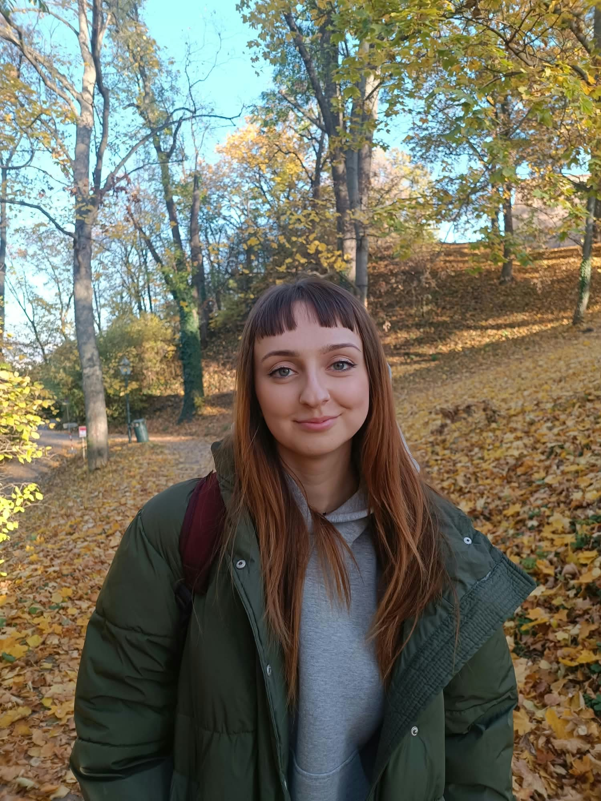

Spájam lásku k zvieratám s vášňou pre kreslenie...
Pri tvorbe portrétov sa snažím zachytiť nielen vzhľad...
Každý portrét vzniká individuálne podľa vašej fotografie...
 Nikola Queen
Nikola Queen
Nikola Queen
Nikola Queen